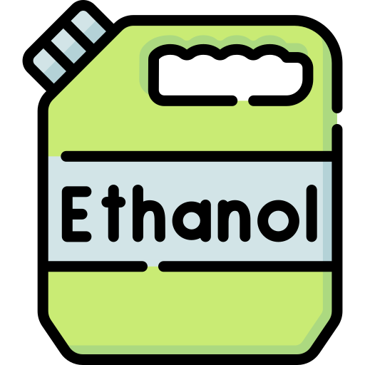
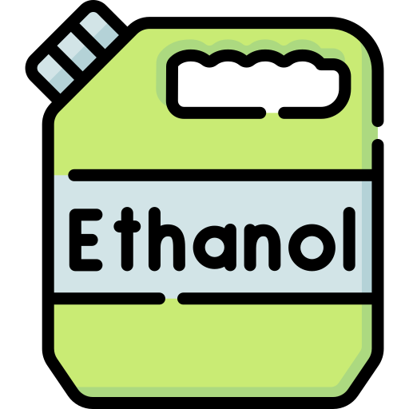

Commodities
Commodities são insumos pouco processados ou em estado bruto que possuem características semelhantes independente do produtor. Estes produtos são utilizados em diversas indústrias para a produção de produtos bastante conhecidos, como combustíveis, cortes de carnes e açúcar refinado.
Classificações
Financeiras: dólar, euro, real e títulos públicos.
Recursos energéticos: energia elétrica.
Agrícolas: etanol, milho, suco de laranja congelado, café, açúcar e trigo.
Ambiental: água e créditos de carbono.
Mineral: ferro, minério de ferro, ouro, petróleo e gás natural.
Química: soda cáustica, ácido sulfúrico e sulfato de sódio.

 
